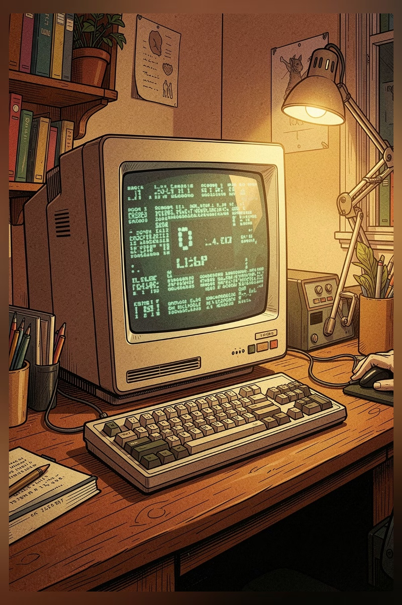
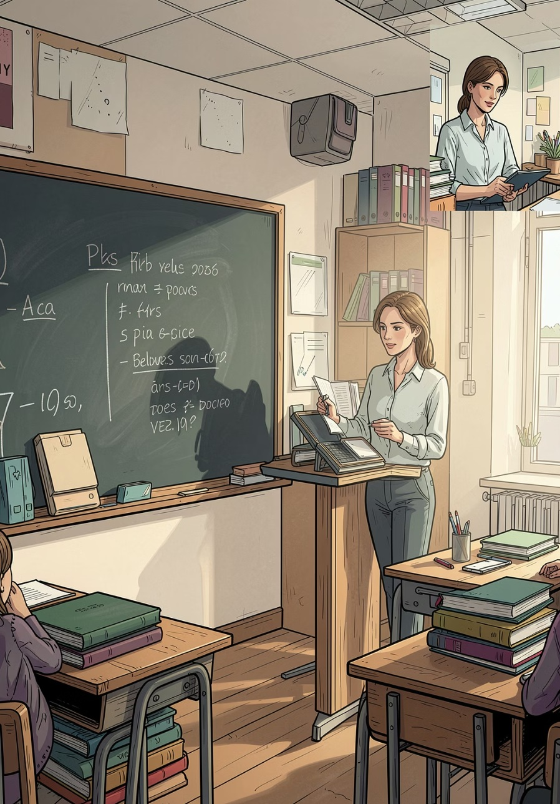
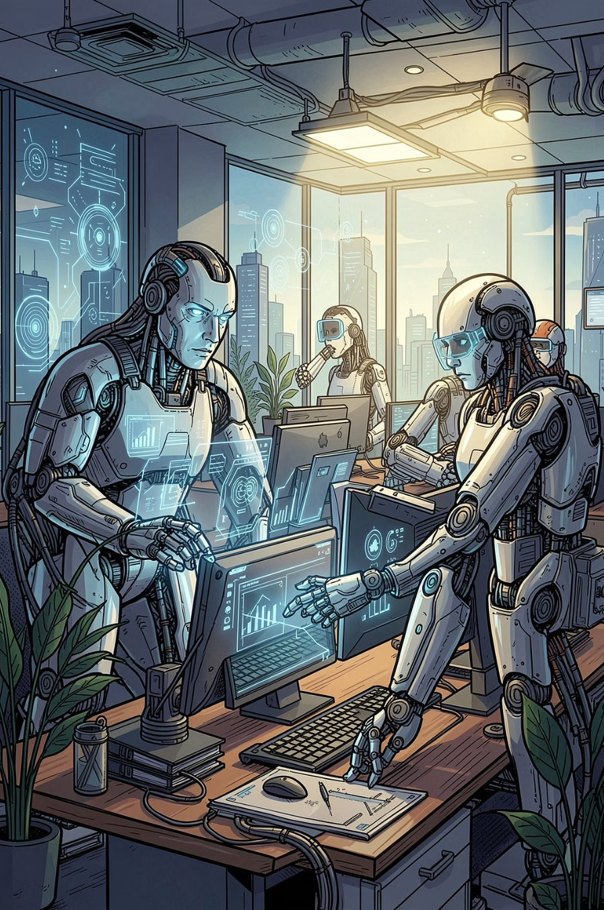

Era Analógica
A Transição
Mitos x Fatos
Multiverso Digital

Do Analógico ao Digital
Laércio Prates
A Semana do Orgulho Nerd | Palestrante Convidado

Profissões que exigem profunda modificação para sobreviver:

Só não salva no seu PC. Provedores continuam rastreando tudo.
Hackers Éticos são as mentes mais requisitadas para proteção hoje.
Ela conecta culturas e fandoms globais. O isolamento é humano.
Automatiza o tédio, mas valoriza a decisão e empatia humana.
A "Pegada Digital" é analisada por 90% dos RHs hoje.
Treinam lógica e estratégia. É uma economia bilionária.
Focado no dever de cuidado das escolas e pais. Combate o Cyberbullying, protege a imagem dos alunos contra compartilhamento indevido e garante que a privacidade educacional seja prioridade. A escola agora é responsável legal pelo bem-estar digital.
Garante que você controle quem coleta e como armazena seus dados pessoais e escolares. Seus cliques são seu patrimônio.
Use a IA para automatizar o repetitivo e foque no estratégico e criativo.
Sua reputação digital é sua vitrine. Mostre seus projetos para o mundo.
Siga mentores e inspiradores. Quebre barreiras geográficas.
Filtre o ruído. O conhecimento profundo é o que gera destaque real.
Vocês são os protagonistas desta nova história.
@connectmindsmarketing
71 99740-9710